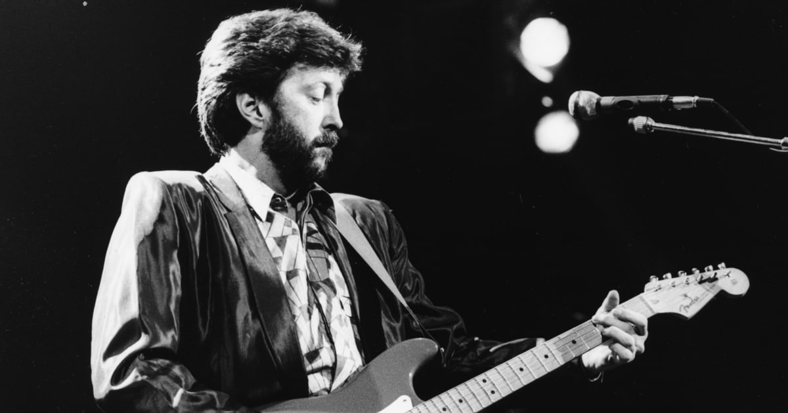

Sus canciones más famosas:
- Tears In Heaven
- Layla
- Cocaine
- Wonderful Tonight
- Change The World
- Riding With The King
- Ten Long Years
- My Father's Eyes
- Old Love
- Lay Down Sally
Ver video:
|
 |
Sus logros:
- Grammy, Lifetime Achievement Award
- Grammy, Best Male Pop Vocal
- Grammy, Record Of The Year
- Grammy, Best Blues Album
- Grammy, Album of the Year
Escuchar Canción:
|
Eric Patrick Clapton, es un guitarrista, cantante y compositor de rock y blues británico, conocido por su magistral habilidad con la guitarra eléctrica, en concreto con la Stratocaster. |